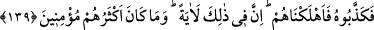
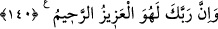

değiliz.”
139. Böylece onu yalancılıkla suçladılar; biz de kendilerini helâk ettik. Doğrusu
bunda büyük bir ibret vardır; ama çokları iman etmezler.
“Böylece onu” yâni Hûd (a.s.)’ı “yalancılıkla suçladılar;” ve bunda ısrar ettiler.
“biz de kendilerini” yalanlamaları sebebiyle dondurucu/uğultulu bir rüzgarla “helâk
ettik.”
Kısaca Hûd (a.s.) kavmini inzâr etti/uyardı, onlara vaaz ve nasîhat etti. Onlar ise öğüt
almadılar ve helak edildiler.
“Doğrusu bunda” Âd kavminin helâkinde “büyük bir ibret vardır;” yalanlayanların
sonunun cezalandırma olduğuna delâlet eden bir alâmet vardır “ama çokları iman
etmezler” yâni Âd kavminin çoğu iman etmemiştir. O kabileden çok azı Hûd (a.s.) ile
beraberdi..
140. Şüphesiz Rabbin, işte O, mutlak galip ve engin merhamet sahibidir.
“Şüphesiz Rabbin, işte O, mutlak galip” azîz, üstün; zâlim ve zorbaların yaptıklarını
yapan ve öğüt kabul etmeyenlerden intikam alandır. “ve engin merhamet sahibidir.”
Allah Teâlâ şefkat ve merhametlidir. Onları helâk edici cezadan kurtarır.
Bu âyet, Hûd kavminin yolundan gitmesinler diye bu ümmet için bir korkutmadır.
Denilmiştir ki: “İnsana verilen en hayırlı şey, kendisini frenleyen bir akıldır. O yoksa
kendisini tutup alıkoyan bir hayâdır. O da yoksa kendisini kontrol altında tutacak bir
korkudur. O da yoksa kendisini örtüp gizleyecek bir maldır. O da yoksa kendisini
yakacak bir yıldırımdır ki böylece o kimseden insanlar ve beldeler rahata kavuşmuş
olsun.
İnsanlardan Allah’ın kabulü ve bunun tesiri yok olunca, yalanlayan geçmiş ümmetlere
tûfan, kasırga ve ateş gönderdiği gibi Allah, onların üzerine kendilerini yok edecek bir
azab gönderir. Tıpkı her tarafını diken kaplayan bir arazi gibi. Tekrar beyaz/temiz hale
gelene kadar mutlaka onun ateşe verilerek kökünün kazınması ve yakılması gerekir.
Şu halde akıllı kimseye düşen ibret almak, Allah Teâlâ’nın cezalandırmasından
korkmak, âdetleri ve şehvetleri terk etmek, muhâlif davranışlarda ve yasaklarda ısrar
etmemektir.
Yoksa uğursuzluk âdeti, şeytan askerlerinden midir?